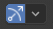

视口小部件¶
参考
- 模式
物体模式和编辑模式
- 标题栏

The way how gizmos are displayed in the 3D Viewport can be changed in the Viewport Gizmos pop-over. There is a switch to turn off all gizmos for the 3D Viewport.
视口小部件¶
- 导航
启用/禁用导航小部件。
- 活动工具
启用/禁用活动工具小部件。
- 活动的对象
Enable/disable the gizmo for the active object.
对象小部件¶
The Object Gizmos allows mouse controlled translation, rotation and scaling in the 3D Viewport. There is a separate gizmos for each operation. Each gizmo can be used separately or in combination with the others. You can use the gizmos by dragging one of the three colored axes with LMB. The transformation will be locked to the clicked axis.
Holding down Shift after you LMB the gizmo handle will constrain the action to smaller increments. Holding down Shift before you LMB click on one of the handles will cause the gizmo action to be performed relative to the other two axes. See 平面锁定.
- 位置
The orientation to use for the gizmo. The orientations can be configured in the viewport orientation Orientations menu.
- 移动
Show the gizmo to control the location. Dragging the small white circle allows free transformation.
- 旋转
Show the gizmo to control the rotation. When you hover your mouse over the gizmo a highlighted circle will appear, clicking this will activate trackball rotation.
- 比例|缩放
Show the gizmo to control the scaling.
{kind=link}
{kind=link}
{kind=link}
{kind=link}
See also
空物体¶
Gizmo settings for empties.
- 图像
Show the gizmo to adjust the image size and position of empties.
- 力场
Show the gizmo to adjust the force field.
灯光¶
Gizmo settings for lights.
- 尺寸
Show the gizmo to adjust the size of lights.
- 朝向
Show the gizmo to adjust the direction of the light.
相机¶
Gizmo settings for cameras.
- 镜头
Show the gizmo to adjust the lens and orthographic size.
- 焦距
Show to gizmo to adjust the focus distance.